Famille 1 · Mes chansons
Chansons originales
Un avant-goût de mes chansons originales, en quelques secondes — celles de l’album d’une vie.
Ouvrir la famille complète →Robertville · Nouveau-Brunswick · Acadie
Autrice-compositrice-interprète acadienne
L’album d’une vie, entre mers et prières.
« Une fille qui lâche pas »
Un pas à la fois
Cindy Roy dehors, en robe verte, les bras grands ouverts sous un ciel bleu
Un pas à la fois
Bienvenue
En attendant l’album, mon site officiel, c’est lui : tous les petits bouts de moi, ramassés avec amour, un pas à la fois.
« Bienvenue dans mon jardin musical,
où mon cœur se partage entre deux rives :
mon Acadie natale — Robertville, au cœur de Belle-Baie,
là où la mer, jamais ben loin, veille sur ma vie —
et Laval, mon havre tranquille,
où je fais escale entre deux marées. »
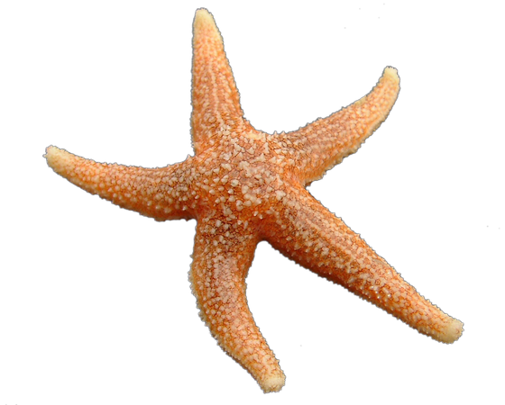
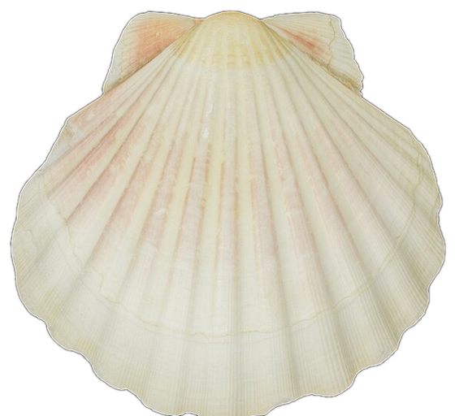
Mère chanteuse — je chante ce que j’écris, je raconte ce que je vis, je cuisine, je ris et je prie, et partout où je passe, je sème l’amour à tout ce qui vit.
Mon Acadie natale a pas d’adresse : Je la porte partout où je vais.
Le plateau
Envie d’écouter tout de suite? Voici tout mon art, servi sur un même plateau.
Mes chansons originales, mes reprises, mes chansons en construction pis mon humour — tout mon univers rassemblé ici, d’un seul coup d’œil. Le reste du site vous raconte chaque histoire en détail; ici, on écoute.
Famille 1 · Mes chansons
Un avant-goût de mes chansons originales, en quelques secondes — celles de l’album d’une vie.
Ouvrir la famille complète →Famille 2 · Mes reprises
Dix-huit reprises favorites en extraits — des versions toutes simples, pis d’autres avec arrangement.
Ouvrir la famille complète →Famille 3 · En construction
« Des bouts de moi »
Sur l’établi en ce moment : « Entends ma prière », « Moi je crois », « Les mots oubliés », « Une fille qui lâche pas » — et la suite pousse tranquillement.
Entrer dans l’Atelier →Et aussi · Pour rire
La bande-annonce de mes capsules d’humour — pour rire un bon coup, ensemble.
Voir le projet au complet →Mes plus beaux accomplissements
Ces chansons-là ont une histoire — et quelques moments brillent plus fort que les autres. Les voici.
En 2015, ma chanson « Entends ma prière » remporte la Chanson primée (Étoile) au Gala de la chanson de Caraquet — le Prix Auteur-compositeur, prix de composition de la SOCAN — et le Prix RADARTS, un laissez-passer pour la FrancoFête en Acadie. C’est le cœur de mon histoire — arrêtez-vous-y un moment.
« Entends ma prière » — version instrumentale classique
Caraquet · 31 juillet 2015
La chanson primée (Étoile), le trophée, le Prix RADARTS, la lettre du député — et un cœur plein de gratitude. Je vous raconte ce soir-là au complet, un peu plus bas.
Lire l’histoire du Gala →Petit-Rocher · 6 août 2015
Six jours après le Gala, le maire de Petit-Rocher, Luc Desjardins, m’écrit au nom de son conseil : « C’est avec fierté que nous saluons votre talent. » Un honneur de chez nous, gardé précieusement.
Voir la lettre →Assemblée législative · 2 décembre 2015
Le député Daniel Guitard s’est levé en Chambre pour souligner mon prix : « Cindy fait la fierté des gens de notre région. » Sa lettre encadrée garde ses mots.
Lire l’histoire de l’hommage →Beresford · Février 2015
Au Carnaval du Siffleux, les juges et le public m’ont fait l’honneur de la première place de La Voix de Beresford : le prix des juges et le prix du public, les deux.
Lire l’histoire de La Voix de Beresford →Christian « Kit » Goguen, interprétant « Entends ma prière » au Gala 2015
Voir la vidéo →Caraquet · 31 juillet 2015
Et tout ce qui entoure l’année 2015 — le Carnaval du Siffleux (La Voix de Beresford), Calixte, les auditions à La Voix (TVA) à Québec.
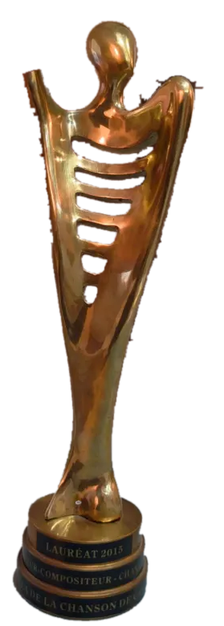
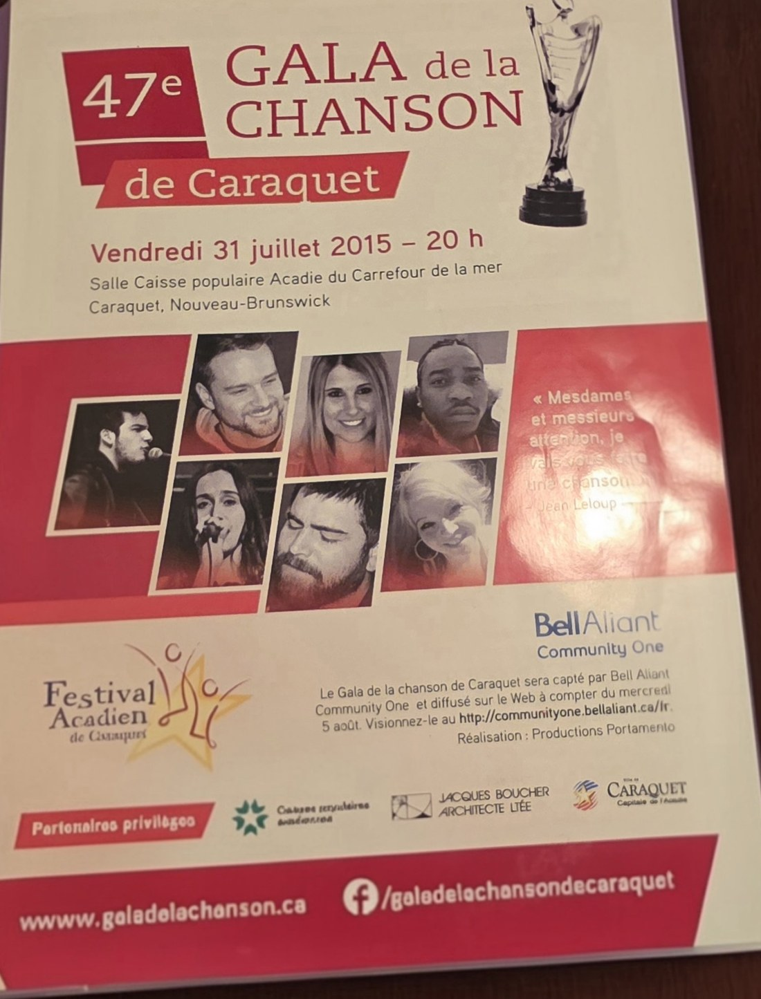
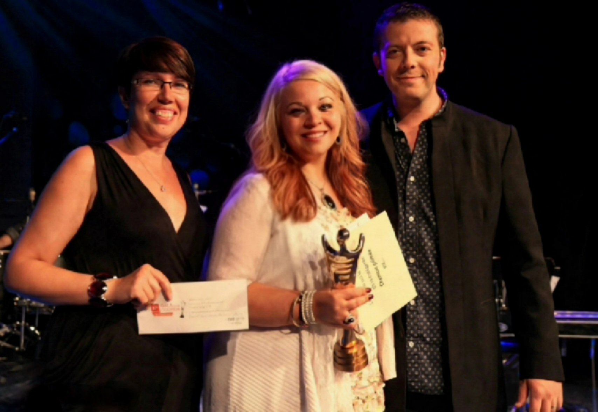
L’histoire de ma chanson primée (Étoile), des prix reçus ce soir-là — et d’une prière qui a été entendue.
Vous venez de l’apercevoir dans mes coups de cœur — installez-vous, je vous raconte cette soirée-là au complet.
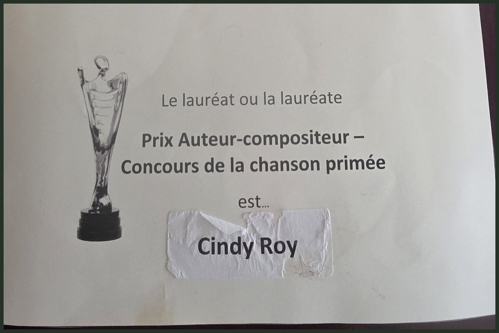
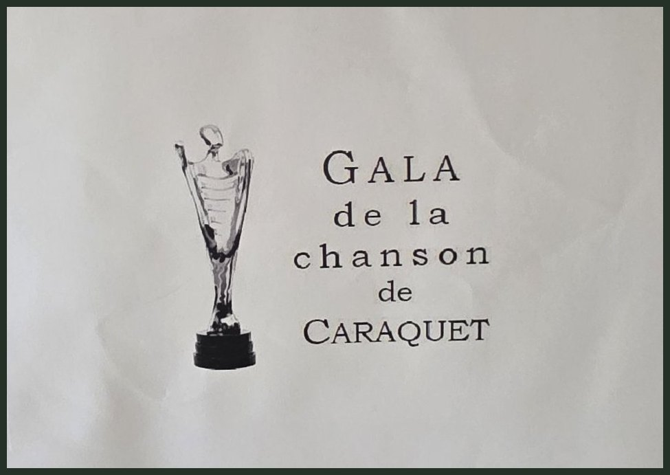
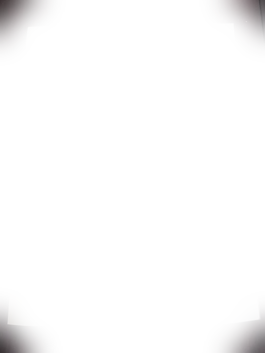
En 2014, je venais de perdre mon père, Lévis Roy, pis je traversais une période très difficile : l’hôpital, le travail, mes jeunes enfants — pis le combat de mon vaisseau, avec la douleur pis tout ce qu’il traînait avec lui. Le diabète s’ajoutait à ça dans ce temps-là. Tout arrivait en même temps. Je marchais chaque jour, je me battais pour ma santé. Pis un jour, en pleine marche, une mélodie m’est venue, comme un cadeau tombé du ciel. J’ai levé les yeux… et les mots sont arrivés tout seuls : « Entends ma prière. » Je me suis enregistrée sur mon téléphone, petit bout par petit bout, pour rien perdre. De retour à la maison, j’ai tout couché sur papier — mes paroles, ma mélodie — puis les accords sont venus à la guitare.
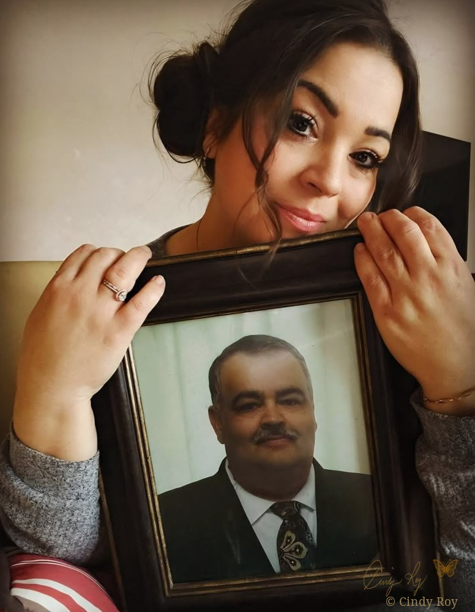
Ce que je demandais, dans cette chanson-là, c’était de guérir — pis de trouver ma voie. La maladie de Verneuil, connue aussi sous le nom d’hidradénite suppurée, m’avait fait la vie assez difficile — présente depuis ma petite enfance, elle a duré plus de 25 ans. Je demandais à Dieu de m’aider à porter cette croix-là, pis à m’en sortir. C’est écrit tel quel dans mes mots : « Aide-moi à trouver ma voie comme tu l’as fait. » Pis dans le bridge, ça monte en crescendo : « Aide-moi, oh aide-moi… » — mon cri du cœur. Je te chante ma prière, tout doux et humblement, avec mes joies et mes pleurs, de mon âme jusqu’au ciel.
Mais ma prière est pas restée juste la mienne. En l’écrivant, le « je » est devenu « nous » : « Aides-nous à prendre notre croix comme tu l’as fait. » Pis plus loin : « Ici sur la terre, nous rêvons de faire un monde meilleur — illumine notre cœur. » C’est une prière pour moi, oui — mais aussi pour tout le monde qui porte quelque chose de lourd.
Pis ma prière a été entendue. On dit de cette maladie qu’elle ne guérit pas — elle est considérée incurable encore aujourd’hui. Moi, je suis en rémission : je n’en souffre plus — depuis 2015, plus rien. Pis le diabète est disparu lui aussi, avec mes efforts pis le virage santé que j’ai pris. Un pas à la fois, j’ai repris ma santé en main — j’ai perdu 140 livres, pis aujourd’hui, je n’ai plus besoin d’aucun médicament. Ma perte de poids, la nutrition, la prière, la foi, mon père… je crois que tout ça a contribué à ce que je vis comme un miracle.
Un an plus tard, le 31 juillet 2015, « Entends ma prière » remportait la Chanson primée (Étoile) au Gala de la chanson de Caraquet — le Prix Auteur-compositeur, prix de composition de la SOCAN — portée sur scène par la voix de Christian « Kit » Goguen pis le piano d’Isabelle Thériault. J’y ai toujours vu un coup de pouce de mon papa, comme s’il me disait : « J’ai pas pu t’aider quand j’étais malade… Là, je souffre plus. Je vais t’aider, ma fille. » Ma prière a été entendue.
Si tu vis avec la maladie de Verneuil pis que t’as pas l’info, t’es pas seul. Il y a des gens qui comprennent, de l’aide, pis de l’espoir — je le sais, je m’en suis sortie.
Pour en apprendre plus : Fondation canadienne de l’hidradénite suppurée
Pour trouver du soutien : Hidradenitis and Me
Je ne changerais rien à mon histoire : tout ce que j’ai traversé m’a façonnée, les beaux moments comme les moins beaux. Même les passages difficiles nous laissent des leçons précieuses — des outils à garder dans notre coffre, pour les jours où on en aura besoin.
« Avant de me rendre », c’est moi qui l’ai écrite, mais c’est l’histoire de mon père : son voyage vers son ciel, ses trébuchements en chemin et, au bout du compte, son âme sauvée. En l’écrivant, j’avais l’impression qu’il me racontait tout ça à travers moi, comme s’il avait emprunté mon vaisseau pour me transmettre son histoire. Moi, j’étais simplement le canal, le cœur grand ouvert.
Pour moi, « Moi, je crois », c’est croire à la vie, de tout son cœur. On pense souvent que le bonheur est inaccessible, alors qu’il suffit parfois, tout simplement, de le choisir. Il faut aligner notre cœur avec notre être profond ; nos expériences humaines nous y conduisent souvent. Je crois que nous sommes une conscience, de l’énergie, et que nous avons simplement emprunté ce vaisseau pour cette vie-ci.
Le Prix Auteur-compositeur m’a été remis pour ma chanson originale « Entends ma prière » — le prix de composition associé à la SOCAN. Et ce même soir, au même gala, j’ai aussi reçu le Prix RADARTS, un laissez-passer pour la FrancoFête en Acadie.
Ce que j’ai jamais vraiment raconté, c’est le frisson que ça m’a fait d’entendre Christian Kit Goguen interpréter ma chanson, ce soir-là. J’avais des frissons partout, à la grandeur du corps — pis encore aujourd’hui, juste d’en parler, j’en ai. Il en a fait une interprétation majestueuse : personne n’aurait pu interpréter ma chanson aussi bien que lui. On dit souvent qu’un message est jamais mieux porté que par soi-même, mais lui, il a trouvé en lui la juste mesure. C’était aligné comme ça — c’est lui qui pouvait porter mon message de la façon que je voulais qu’il soit porté. C’est comme s’il avait apporté mon cœur sur la scène, sans que j’aie à me déplacer : ma vraie essence était dans son interprétation. Incroyable, vraiment.
Je pensais tellement pas gagner que je m’étais même pas assise dans la loge avec les autres finalistes — j’étais assise avec les spectateurs, bien contente de voir le spectacle gratuitement. Quand ils ont appelé mon nom, je me cherchais un chemin pour monter sur la scène : je suis passée par le côté, à travers les fils pis toutes les affaires. Ça a pris du temps — c’est pour ça qu’on entend le monde crier « Elle est là! Elle est là! » dans la vidéo : ils me pointaient du doigt, pour montrer que je m’en venais.
Le 2 décembre 2015, le député de Restigouche-Chaleur, Daniel Guitard, s’est levé à l’Assemblée législative du Nouveau-Brunswick pour souligner le prix auteur-compositeur de la chanson primée (Étoile) de Cindy Roy, au Gala de la chanson de Caraquet.
« Cindy fait la fierté des gens de notre région. Elle est une véritable ambassadrice de nos artistes et de tout le Nouveau-Brunswick. »
— Extrait du Hansard, Assemblée législative du Nouveau-Brunswick, 2 décembre 2015.
La couverture de presse complète du Gala vous attend dans le Dossier de presse.
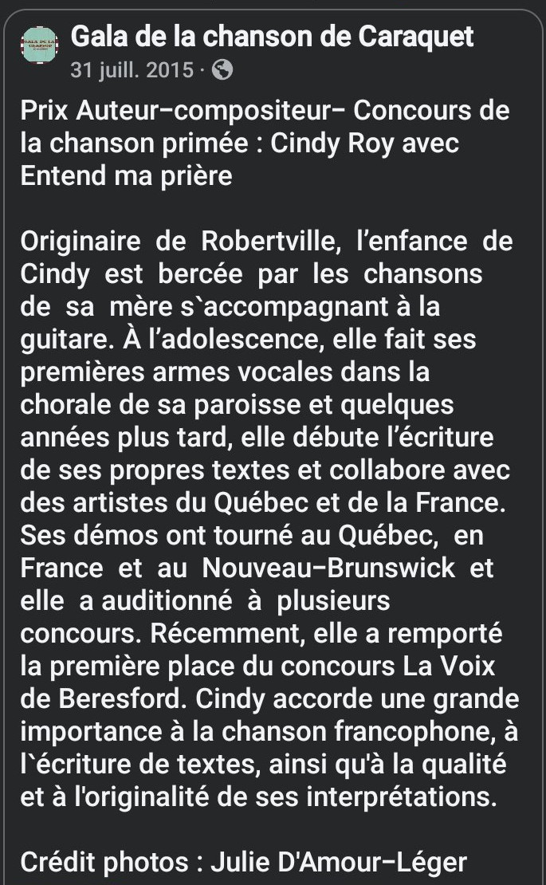
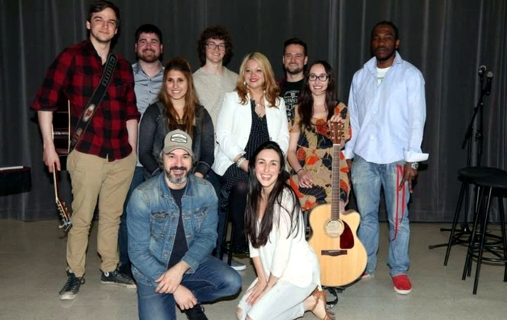
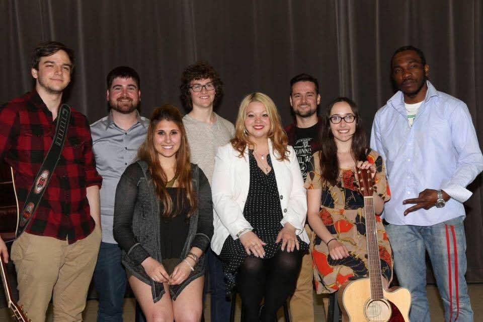
Ateliers, fun avec la gang du Gala à la maison Dugas et souper au resto — mai 2015, avant la grande soirée.
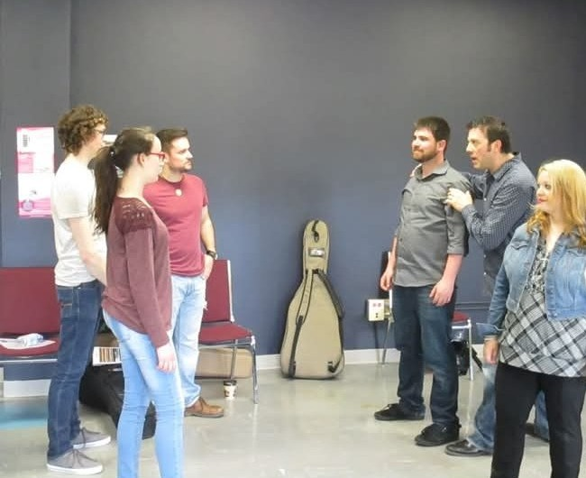
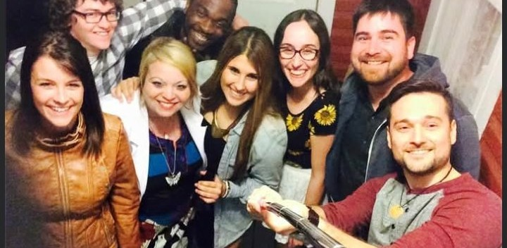
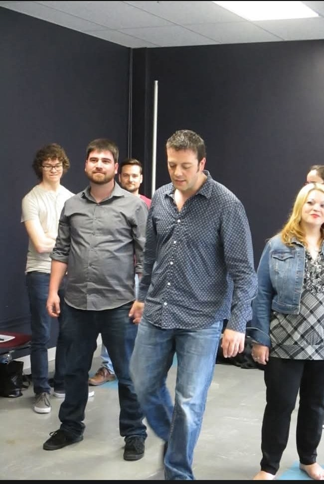
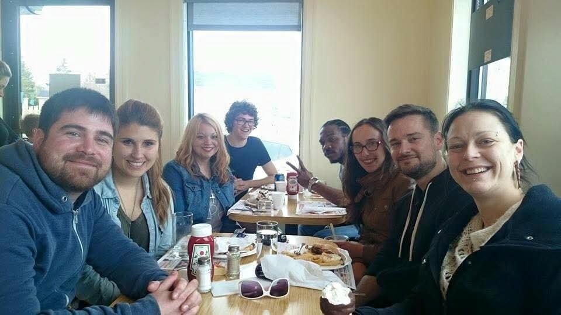
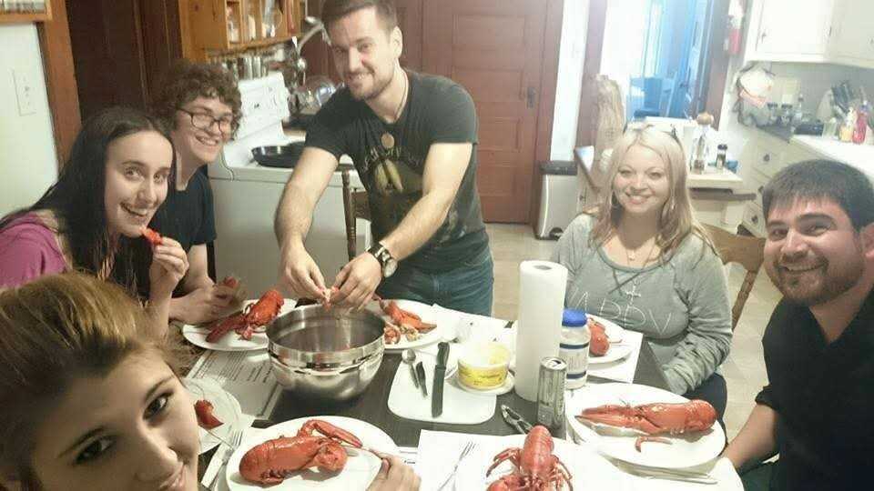
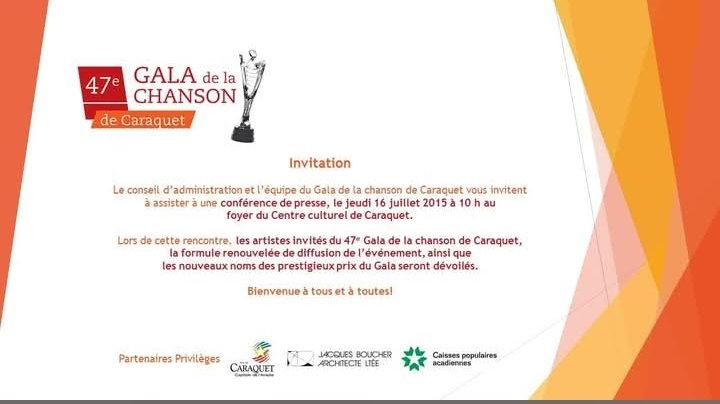
Ma musique
Le Gala, c’est l’histoire d’une seule chanson. Ici, c’est le jardin au complet — ce jardin dont je vous parlais en arrivant. Mes chansons, je les ai vécues avant de les écrire : des histoires vraies, pis une fille qui lâche pas.
Les chansons poussent.
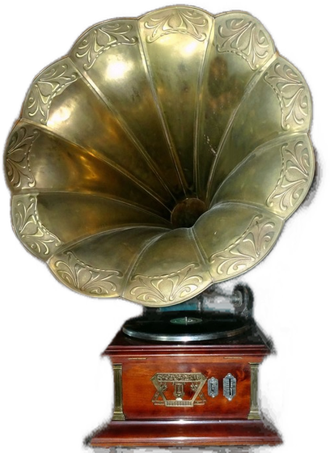
Les chansons de l’album d’une vie — en chantier, une à une.
Les six chansons que je présente ici sont entièrement de moi — paroles et musique, sans collaboration.
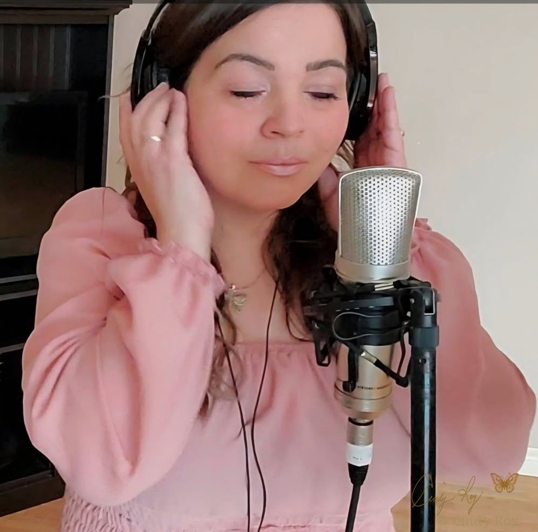
Mes chansons naissent partout où l’inspiration me pogne — en marchant, en auto, je sors mon téléphone et je chante un petit bout, juste ma voix, pour pas oublier. Certaines sont nées à deux, de belles rencontres qui les ont portées plus loin.
Béni sois-tu — texte : Cindy Roy & Théo Rota · musique & arrangement : Théo Rota
Que la neige — texte : Cindy Roy · musique & arrangement : Théo Rota
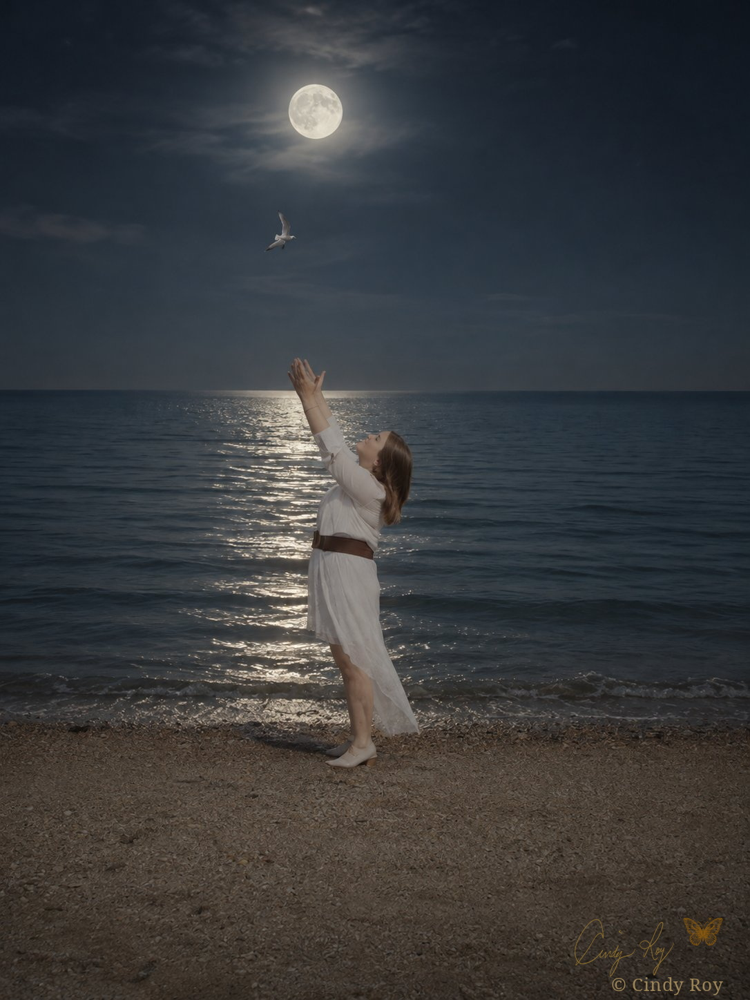
Denis Leclair« Toile au clair de lune » — un clic2017 — Paroles : Cindy Roy · Musique : Cindy Roy et Denis Leclair · Guitare : Denis Leclair · Chœurs : Denis L. · Voix : Cindy Roy
Ayoye — reprise d’Offenbach (2017) · Voix : Cindy Roy · Arrangement : Denis Leclair
« De 2005 à 2017, j’ai collaboré à distance avec Martial Marey (dit « Michel de la lumière »), auteur-compositeur français. Il m’envoyait ses maquettes en me disant : « Fais de la magie avec ça » — et il me laissait carte blanche pour les interpréter, être moi-même. Quand je lui retournais les chansons, il me répondait : « Tu m’as fait tomber en bas de ma chaise! »
J’ai prêté ma voix à la plupart de ses compositions, dont « T’aimer au firmament », une de mes préférées, et « Mes cris dans le silence » (musique de Léonide Choumakov), qui s’est rendue jusqu’en finale du concours international en ligne MuseON-2007.
Avec de jeunes enfants, c’était l’idéal : continuer la musique de la maison, apprendre à m’enregistrer, approfondir ma voix et mes techniques d’enregistrement. Je garde ces belles années en précieuse mémoire — son expérience, sa bienveillance. Ça a été une véritable école, pis un beau cadeau.
Il nous a laissé de belles chansons à texte du cœur, que j’aime beaucoup. Martial n’est plus de ce monde — paix à son âme — mais ses chansons, elles, vivent encore. 🕊️ »
De 2005 à 2017, j’ai prêté ma voix aux compositions de Martial Marey, auteur-compositeur français. Son histoire complète vous attend juste au-dessus — ici, j’en ai placé deux à écouter, pour qu’elles vivent encore.
En finale à MuseON-2007 — concours international France-Russie
Musique : Léonide Choumakov · Texte : Martial Marey · Interprétation : Cindy Roy (Canada)
Chanson de Martial Marey interprétée par Cindy Roy, en son hommage 🕊️🤍
Martial Marey, auteur-compositeur de France, a été une école pour moi. Pendant des années, j’ai prêté ma voix à ses chansons et à ses maquettes — dont « T’aimer au firmament », celle que j’avais choisie pour mon audition à Star Académie en 2005. « Mes cris dans le silence », née de notre collaboration avec le compositeur Léonide Choumakov, a remporté le premier prix dans sa catégorie au concours international MuseON-2007. Le grand Adamo a entendu nos démos et m’a encouragée à continuer. Martial nous a quittés — paix à son âme. Ce qu’il m’a appris, je le porte encore.
Je m’amuse ici, tout brutement, à vous livrer un petit bout de moi à travers mes chansons préférées — des versions toutes simples, comme dans mon salon, entre nous, pis d’autres avec arrangement. Mon instrument de choix, ça reste ma voix. Mon répertoire est large : variété francophone, chansons à texte, country, rock et pop. Pas d’étiquette — j’aime les chansons qui disent quelque chose, pis je sais m’adapter à votre événement. D’autres titres s’ajouteront ici, au fil de mes vidéos YouTube.
Pour les légions, les salles pis les mordus du country par chez nous — ma sélection, en extraits.
Bonus track
La chanson au complet, en audio seulement — elle mérite une écoute.
Des extraits de 15 secondes — chansons de Francis Cabrel
« Je vous montre mes chansons pendant qu'elles se font — brutes, pas finies, comme dans mon salon. Vos impressions comptent pour de vrai : dites-moi lesquelles vous touchent, lesquelles je devrais continuer. Je vous invite à vivre l’histoire avec moi. Embarquez dans mon train, pis faites un bout de chemin avec moi. 🦋 »
Ici, c’est mon atelier, où mes chansons poussent, une à une, avant de décider lesquelles peaufiner, lesquelles finir. C’est mon credo qui travaille, ici : montrer la chanson pendant qu’elle se fait — brute, pas finie, mais déjà pleine de quelque chose à raconter.
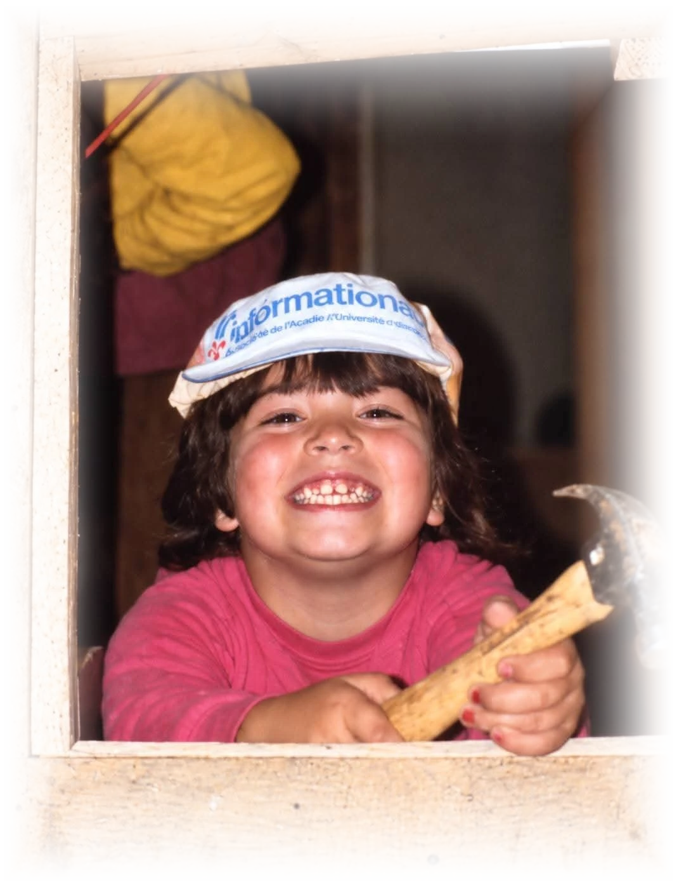
Les chansons de l’album d’une vie — en attente d’arrangement, une à une. Les nouvelles ébauches s’ajouteront ici, un pas à la fois.
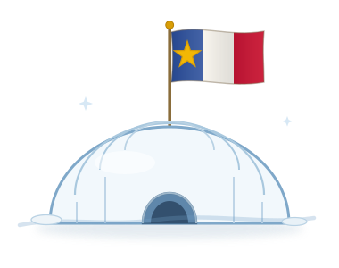
Carnaval du Siffleux · Beresford · 2015
Reculons un peu : quelques mois avant le Gala, un hiver à Beresford m’avait déjà changée.
Février 2015, au Carnaval du Siffleux de Beresford (aujourd’hui Belle-Baie) : les juges et le public m’ont fait l’honneur de la première place de La Voix de Beresford — le prix des juges et le prix du public. Une soirée gravée dans mon cœur, que je vous partage ici, en vidéos et en photos.
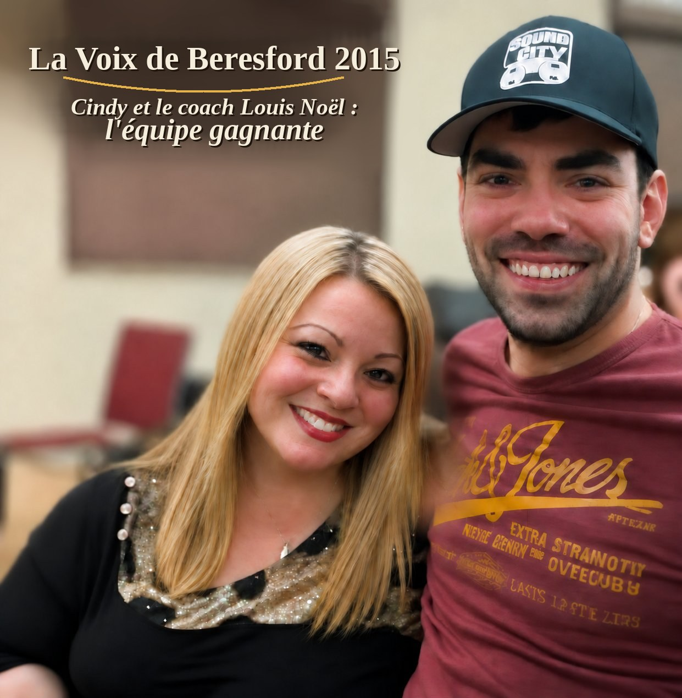
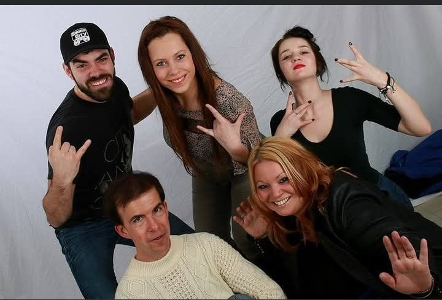
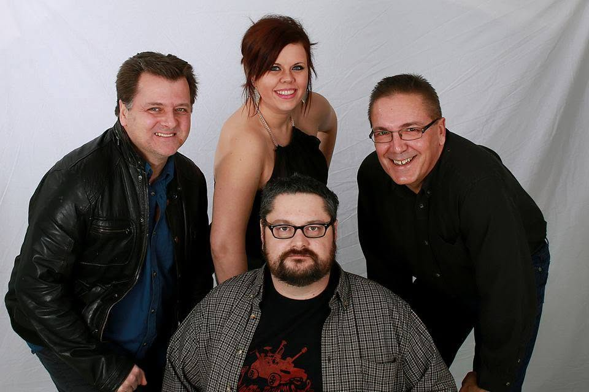
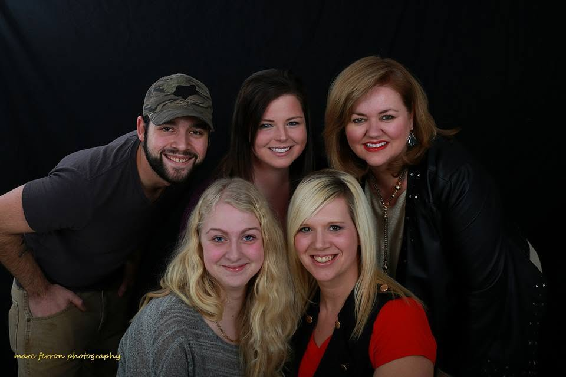
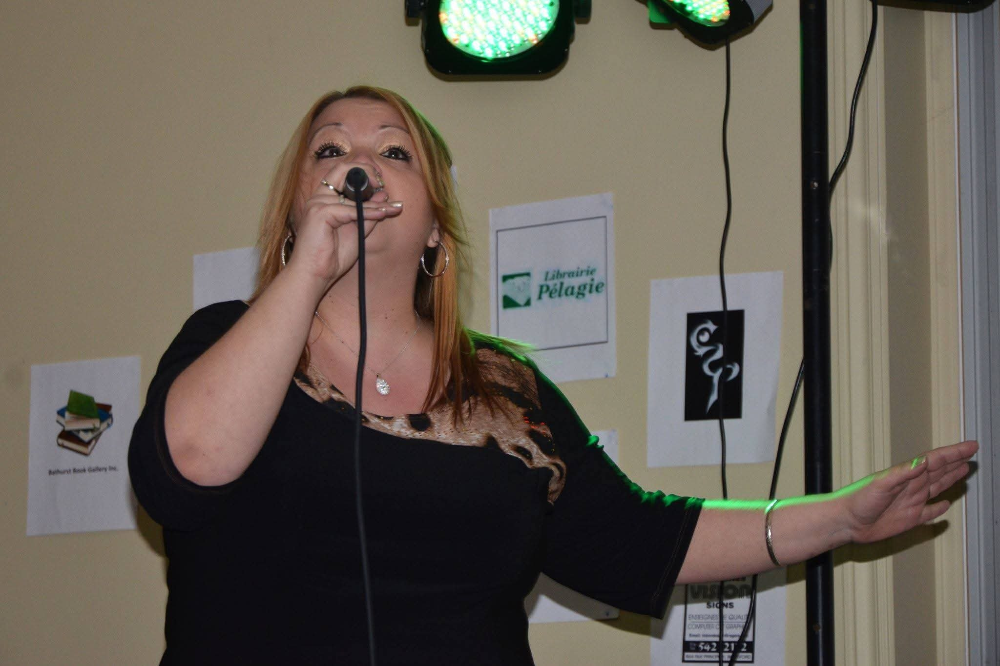
Photos : Cinthia-Line Boudreau
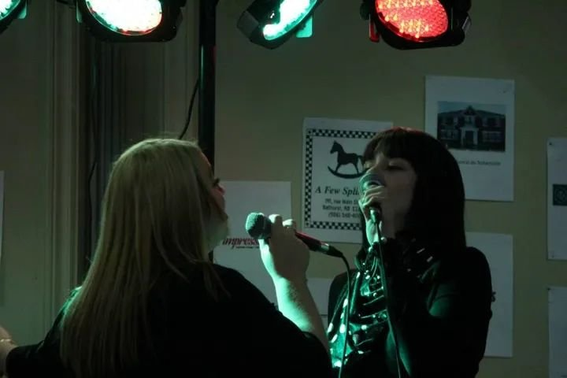
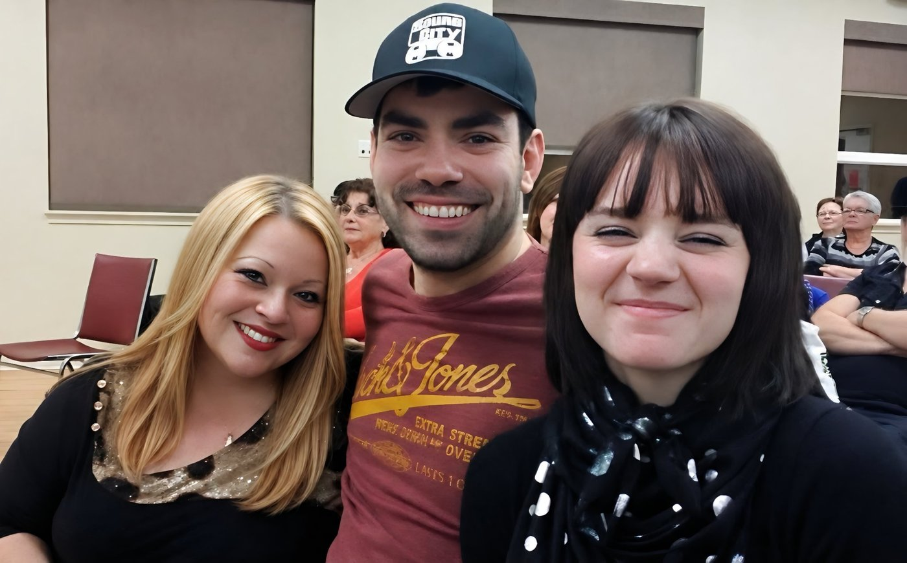
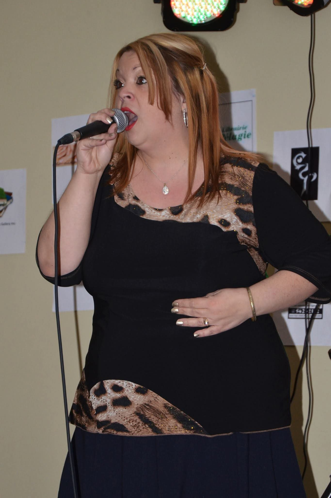
Photos : Cinthia-Line Boudreau
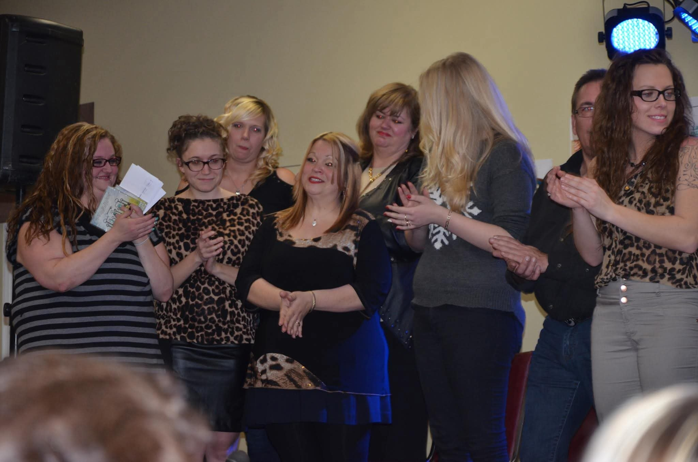
Ce que ce concours-là m’a donné de plus beau, c’est un public, pis de la belle expérience de scène. Le monde était content d’entendre chanter en français — leur langue, chez eux, sur une scène. Il s’est trouvé que j’étais presque la seule du concours à le faire, pis ça leur faisait du bien. Ils me suivaient de semaine en semaine, ils me le disaient — pis beaucoup d’entre eux me suivent encore aujourd’hui, sur ma page Facebook, sur YouTube, sur Instagram. Pis là, ils ont une place de plus pour me retrouver : ce site officiel. Les gens venaient de toutes les petites régions autour — celles qui forment aujourd’hui les secteurs de Belle-Baie. C’est là que j’ai bâti mon public, un samedi à la fois. Les salles étaient pleines — ils étaient obligés de refuser du monde à la porte. Personne s’attendait à ça — moi la première. Pis le plus beau là-dedans : ils m’ont prêté leur confiance, samedi après samedi — parce qu’une artiste, c’est exigeante envers elle-même, pis la mienne était pas dans le tapis. Tranquillement, un pas à la fois, la leur a fini par me gagner moi aussi.

Merci, du fond du cœur.
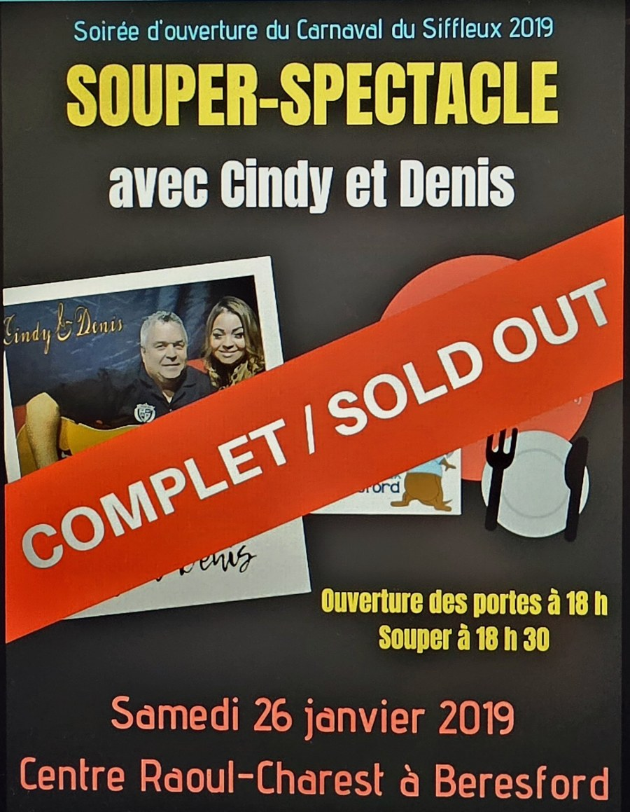
Quatre ans plus tard, on m’invite à chanter au souper-spectacle qui ouvre officiellement le Carnaval du Siffleux — et le monde a répondu présent : la salle était pleine, et on en était tellement reconnaissants.
Ce concours-là a été mon propulseur : il m’a donné la confiance de poser ma candidature au Gala de la chanson de Caraquet.
Février 2015. Quelques semaines à peine après avoir eu l’honneur de remporter La Voix de Beresford, je vais souper à Petit-Rocher, au Bistro Cœur d’Artishow — le bistro de mon ami Michel Carpentier et de Karim. Un souper comme les autres, je pensais. Je savais pas ce qui m’attendait à la table voisine.
À cette table : l’ensemble Musica Mundi, venu accompagner le grand Calixte Duguay.
Michel partage ma belle nouvelle au monde, pis il me demande de chanter. Le cœur qui débat, je me lève… pis je chante a cappella « Plus jamais la mer » — sa chanson à lui, devant lui. Musica Mundi pose ses harmonies par-dessus, comme une vague qui lève — un moment suspendu, un gros plein d’émotion. Pis la cerise sur le sundae : Calixte vient s’asseoir à côté de moi. Il me félicite, pis il m’encourage à aller auditionner pour La Voix.
Quelques mois plus tard, en avril-mai 2015, je monte à Québec auditionner, accompagnée de mon ami Michel. En route, le téléphone sonne : c’est Calixte, juste pour me souhaiter bonne chance. Devine quelle chanson j’ai chantée à mon audition… la sienne.
Le bistro a malheureusement fermé ses portes depuis — comme bien d’autres entreprises, il n’a pas été épargné par les difficultés des années 2020 à 2022. Mais ce soir-là, lui, il reste ouvert dans ma mémoire — pis il y fera toujours de la musique.
Pour découvrir Calixte Duguay — un pionnier de la chanson acadienne →
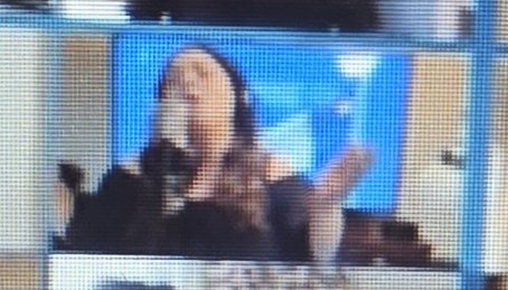
Mon petit carré, dans le grand chœur — « Les Aboiteaux », juin 2020. Je vous raconte ce beau projet-là dans ma section Scène.
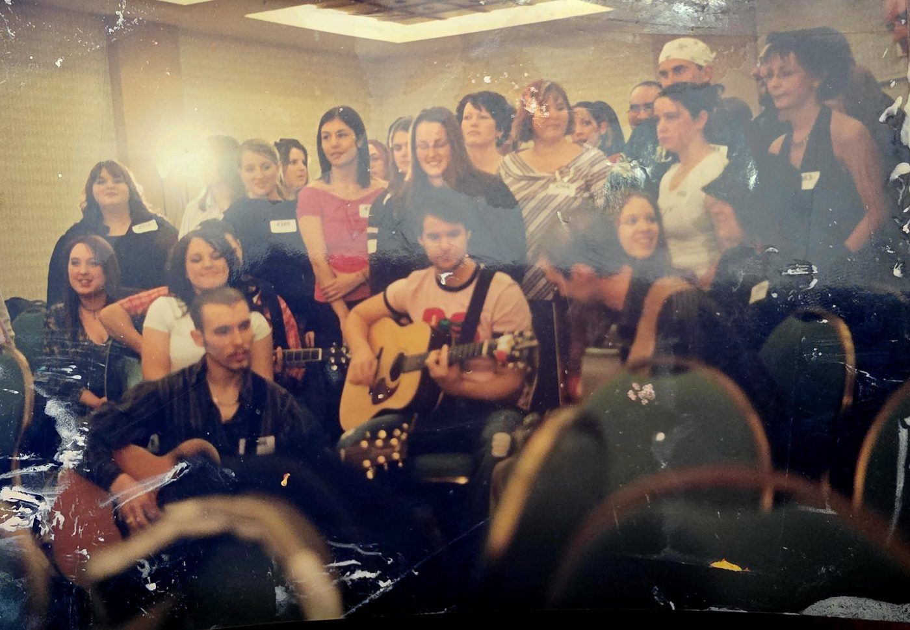
Au fil des années : 2003 · 2005 · 2015 · 2023
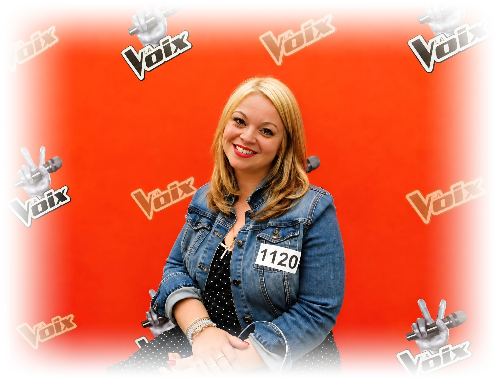
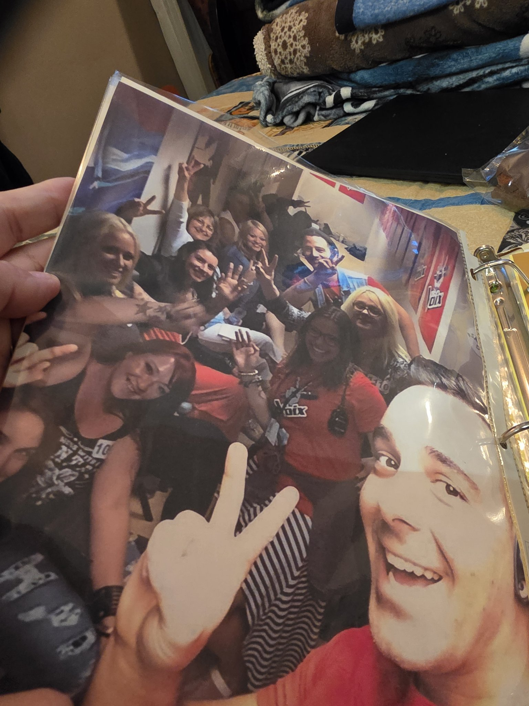
À l’audition, ça allait vite : la plupart des candidats, une quinzaine de secondes, pis « next ». C’était un peu énervant. Moi, j’ai été surprise — on a écouté ma chanson jusqu’au bout. Pour ça, pis pour tout ce que l’expérience m’a donné comme bagage, ça valait la peine. Très belle expérience — une expérience de plus à mon arc.
Pis je lâche pas : à l’été 2023, j’ai envoyé une autre audition, cette fois en vidéo, de chez nous. La confirmation est arrivée — elle avait bien été reçue — pis le téléphone a pas sonné. C’est correct comme ça : chaque pas compte, même ceux qu’on voit pas. Un pas à la fois.
2003 — Canadian Idol : « There You’ll Be » (Faith Hill)
2005 — Star Académie : « T’aimer au firmament » (Martial Marey)
2015 — La Voix, à Québec : « Plus jamais la mer » (Calixte Duguay)
2023 — La Voix, en vidéo : « La chanson des vieux amants » (Jacques Brel) pis « Listen to Your Heart » (Roxette) — pour montrer que je chante dans les deux langues.
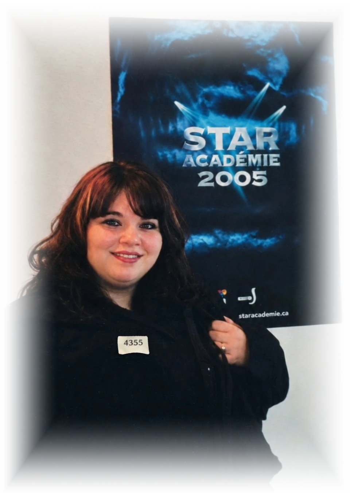
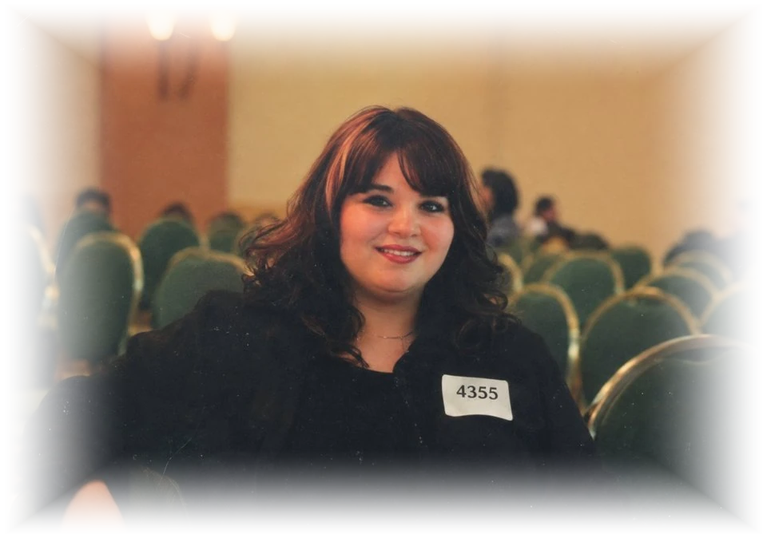
Pis mes concours ont leur place bien à eux, dans cette même section : Le Gala de la chanson de Caraquet pis La Voix de Beresford — Carnaval du Siffleux.
Moments de scène
Des concours, je suis passée à la scène — la vraie, avec son monde, ses lumières, ses soirées qui restent.
Des soirées gardées précieusement, partagées ici en entier — des cercles d’auteurs aux duos improvisés, en passant par ces soirées qui ont compté et qui brillent encore dans ma mémoire.
Au printemps 2020, en plein confinement, plus de 200 chanteurs et musiciens se sont réunis — chacun de sa maison — pour former le Chœur virtuel de l’Acadie. J’ai eu le bonheur d’en faire partie. On a chanté « Partons, la mer est belle » — passée au Téléjournal de Radio-Canada, avec les Snowbirds — pis « Les Aboiteaux » de notre grand Calixte Duguay. On me voit dans mon petit carré, juste une chanteuse parmi tant d’autres — mais j’ai fait partie du projet, pis c’est ça qui était beau. Le projet a eu l’honneur de récolter cinq nominations aux Prix MNB de 2021, pis deux aux East Coast Music Awards de 2022.
« Les Aboiteaux », c’est une chanson de Calixte Duguay — mon histoire avec lui est racontée dans Le Gala 2015.
Et quand la dernière note s’éteint, il reste les images.
Vous m’avez entendue, vous m’avez vue — il reste à vous dire ce en quoi je crois.
On vit à une époque où tout va vite. Les outils d’intelligence artificielle font maintenant partie de notre quotidien. Moi, je les trouve intéressants et agréables à utiliser. Mais pour moi, ce qui compte, c’est de rester vraie et de ne pas oublier ce qui nous rend humains : nos petites failles, nos imperfections et tout ce qui fait qu’on est uniques.
Avec ma musique, j’ai envie de vous montrer le chemin au complet — pas seulement la chanson une fois qu’elle est terminée. Une idée, quelques accords, des mots qui cherchent leur place… Tout ça fait partie de l’histoire.
C’est correct de partager un projet même s’il est encore à l’état brut. Une chanson n’a pas besoin d’être parfaite pour avoir quelque chose à raconter. Elle peut changer, grandir et prendre une toute autre couleur avec le temps.
Alors, je vous invite à entrer dans mon univers et à suivre mes chansons avec moi, depuis leurs premiers petits bouts jusqu’à là où elles nous mèneront. Pas à pas, vous pourrez les entendre évoluer et découvrir les coulisses de leur création.
Bienvenue dans mon univers. On va faire ce chemin-là ensemble, un pas à la fois.
« La musique, c’est de la nourriture pour mon âme. »
Je suis Cindy Roy, autrice-compositrice-interprète acadienne, née à Bathurst et originaire de Robertville, au Nouveau-Brunswick.
Je chante depuis toute petite — vers l’âge de deux ans, presque avant même de savoir parler. Dans le salon des Boudreau, la musique prenait vie : à Noël, dès que les guitares sortaient, c’était un vrai petit paradis pour mon âme de chanteuse en devenir. C’était tassé, mais j’étais déterminée — j’ai fini par me tailler une place parmi les guitares et les voix, tout près, au cœur de la musique. Mon rêve de chanter m’habitait déjà; ces petits moments venaient le nourrir et me murmurer, au creux de l’âme, que la musique était ma mission.
Je suis rigolote, j’aime beaucoup rire — mais je sais être sérieuse au bon moment. Pis je touche à tout : c’est comme ça que je suis faite.
Vétéran de la Deuxième Guerre mondiale, mon pépère Émery gardait toujours sa caméra proche — il voulait conserver nos moments pour toujours.
Découvrir l’hommage à mon grand-père Émery
Le livre de mon oncle Donald : « La guerre à Emery à Edmond »
Le vidéo de Noël juste ici, c’est lui qui l’a filmé. Mon pépère Émery gardait toujours sa caméra proche — il voulait conserver nos moments pour toujours. Mais avant d’être notre pépère, il a été un soldat: vétéran de la Deuxième Guerre mondiale, blessé par balle, revenu chez lui avec ses médailles pis son grand cœur. J’ai écrit ce poème pour lui.
Il s’appelait Emery Boudreau.
Un jeune homme au regard franc,
qui a tout quitté pour défendre la liberté.
Blessé par balle pendant la guerre,
mais jamais vaincu.
Il a connu la peur, le froid, la dureté du monde...
et il a continué d’avancer, guidé par le courage et le devoir.
Sous son uniforme battait un cœur d’homme vrai —
parfois dur, parfois comique,
mais toujours habité d’une force tranquille.
Il portait ses cicatrices comme des souvenirs silencieux,
et son rire, quand il éclatait, faisait oublier un peu la gravité du passé.
Les années ont passé...
et le soldat est devenu grand-père.
Avec ses airs d’homme fort et son humour bien à lui,
il impressionnait autant qu’il faisait sourire.
Enfant, je l’observais avec respect,
mêlé d’un peu de crainte et beaucoup d’admiration.
Aujourd’hui, je regarde sa photo,
et j’entends encore le battement discret de son courage.
Son nom résonne comme une prière murmurée par le vent,
et son âme veille, libre, au-dessus de nos jours.
Merci grand-papa Emery.
Pour tes forces et tes failles,
ton silence, ton rire, ton humanité.
Tu fais partie de notre histoire,
et ta lumière ne s’éteindra jamais.
Lest we forget.
Son histoire complète, son fils — mon oncle Donald Boudreau — l’a racontée dans son livre La guerre à Emery à Edmond, bâti à partir des propres cassettes de pépère.
La musique, l’humour et la gratitude font partie de mon histoire. Dans ma famille, ces petites richesses se transmettent d’une génération à l’autre.
Ma grand-mère Marie Boudreau chantait et jouait de l’orgue dans son salon, souvent à l’oreille. Moi aussi, j’avais déjà l’oreille et je m’amusais à inventer des mélodies. C’est elle qui m’a montré mes premiers accords — ça m’a influencée, comme tout le reste.
Pendant ce temps, mon grand-père Émery Boudreau filmait tous les moments spéciaux — il aimait tellement sa caméra. Excellent cuisinier, c'est lui qui cuisait la dinde à chaque Noël. Vétéran de la Deuxième Guerre mondiale, c’était un véritable héros — il s’est battu pour notre pays. Un homme autoritaire… mais drôle comme pas un! Mon oncle Donald a raconté son histoire dans son livre, La guerre à Emery à Edmond — vous le trouverez plus bas, dans ma vitrine familiale. Ma grand-mère et lui se taquinaient sans arrêt, chacun essayant de nous recruter dans son équipe.
Ma grand-mère Violet montait sur scène sous le nom de « la Gadelle » et faisait rire des salles entières.
Mon grand-père Léandre Roy était charpentier : dans ce temps-là, il savait tout faire de ses mains, et il aimait la chasse. Mais la fin de semaine, il mettait son toupet, affichait son petit sourire en coin et partait courtiser les femmes à la danse. Même à 93 ans, il y allait encore tous les week-ends! Sa fourgonnette était souvent pleine de femmes qu’il amenait danser.
Le dimanche, après la messe, la table de Violet était toujours prête : le repas, le dessert et du thé pour tout le monde. C’est elle qui m’a appris à apprécier les petites choses et à dire merci pour ce qu’on a.
Mon père avait hérité du sens de l’humour de sa mère. Il faisait des imitations de politiciens et se promenait avec un chandail à mon effigie (avec ma photo dessus), ses bretelles multicolores bien en vue, en disant à tout le monde : « C’est ma fille, ça! »
À ma mère, Mona — la toute première.
Ma mère, c’est une force tranquille, une artiste dans l’âme.
C’est elle, la toute première, qui m’a donné le goût de la musique. Je viens d’une famille musicale — ça a bercé toute mon enfance — mais ce sont nos soirées toutes seules, elle avec sa guitare, à me jouer des petits bouts de ses compositions, qui sont venus me chercher au tout début. Avant Diane Tell, avant Cabrel, avant toutes mes influences, il y a eu ma mère. Le plus gros morceau de tout, c’est à elle qu’il revient.
À Michel — l'homme de ma vie.
Michel, l’homme de ma vie — mon complice en tout. Toujours le premier à m’encourager, il connaît mes chansons par cœur — mes silences aussi. On partage le vaisseau, pis la musique : il prend sa guitare pour le plaisir, on chante à deux, on s’amuse comme des enfants — pis on vit au max les belles années qui nous sont données, une journée précieuse à la fois. Un regard, un fou rire, une toune qui part toute seule : c’est ça, nous deux.
Quand je chante, quand j’écris ou quand je fais rire, c’est tout ce monde-là qui chante, écrit et rit avec moi. Ce sont mes racines, mon Acadie — pis c’est un bout de tout ça que je vous partage, un pas à la fois.
Vitrine familiale
Chez nous, l’art, c’est de famille — un vrai buffet de talents. Des livres, de la peinture, des chansons, de la bonne cuisine, de la soudure, de la construction, de la mécanique, de l’électricité, des musiciens pis des libres penseurs — chacun a sa façon de faire de l’art. Voici les œuvres de ma parenté — à découvrir, à savourer, à encourager.
Pascal Roy et Kevin Duguay, propriétaires du Mexiglù, restaurant mexicain à Bathurst (755, avenue St-Pierre).
« La guerre à Emery à Edmond », le récit de la Deuxième Guerre mondiale de mon grand-père, bâti à partir de ses propres cassettes vidéo. Il a aussi publié le roman « Partir pour repartir ».
Son roman « All intérieur », aux Éditions de la francophonie.
Peintre. Son homard géant veille sur le quai de Petit-Rocher. C’est elle aussi qui a peint la page couverture du roman de son frère Donald, « Partir pour repartir ».
Peintre de la région de Moncton. Son livre « The Life Gardener: A Journey Towards Authenticity » (en anglais).
Auteur-compositeur-interprète aussi : deux albums — « Xpressions » (avec « Un Rêve En Acadie »), du temps de sa victoire à Tremplin '97, et « Lessons Learned » (2012), la trame sonore de son livre.
Il a aussi fondé Expressions Painting University, son école en ligne pour peintres.
Originaire de Robertville, comme moi. Son roman jeunesse « Reflet d’elle-même ».
Soudeur Red Seal, propriétaire d’A.R. Soudage à Petit-Rocher : soudage, machinage et découpe laser. Je suis fière de lui.
Ma tante, chanteuse elle aussi. Sa chanson « Délivrer » est sur sa chaîne YouTube.
« Un membre de ma famille qui fait de belles choses pis qui est pas ici? Écris-moi un message — je vais t'ajouter avec plaisir. »
Je suis chanteuse avant tout. Ma voix, c’est mon instrument, pis les mélodies naissent dans ma tête — parfois même au réveil. Autodidacte, je me suis formée en écoutant, en m’enregistrant, en pratiquant pendant des milliers d’heures, en collaborant avec des musiciens du Québec et de la France — de mes premiers pas sur scène jusqu’à mes expériences en studio.
Mon « problème », c’est que plusieurs choses m’intéressaient — j’avais des affinités pour tout plein d’affaires, pis j’avais de la misère à choisir. Je me cassais la tête : je voulais pas juste choisir une chose. Au fond, je le savais, que la musique était mon grand amour; j’aurais dû aller l’étudier. Je l’ai pas fait : c’est l’école de la vie qui m’a formée, à ma façon.
Pis la photo! Je l’adore presque autant que chanter. Nature, animaux, ou moi-même avec mon trépied : j’expérimente avec les angles, c’est passionnant. Poser, je fais ça depuis que je suis petite — à Calgary, je me plantais déjà devant la fenêtre pour la caméra. Pis avec les caméras de cellulaire d’aujourd’hui, on fait des merveilles — pas besoin d’une caméra qui coûte une fortune.
De la chorale de Robertville aux concours, des soirées d’écriture aux collaborations, j’ai toujours gardé des chansons dans le tiroir — pis un rêve qui, lui, est resté bien vivant. Les chansons que je compose, ce sont des bouts de moi que je transforme en musique pis que je partage avec vous. Je vois de l’art partout. Tout ce que je touche, tout ce que je vois, tout ce que je ressens — je fais de l’art avec mes 6 sens.
« Chanter, pour moi, c’est épouser l’âme d’une toune, corps et âme — y mettre mes couleurs, ma flamme, pis valser avec elle, cœur à cœur. »
De petits instants de bonheur, captés dans mon havre de paix.
« Depuis ma tendre enfance, je sais que je suis ici pour une raison. Je ne me suis jamais sentie faite pour les cadres : je peux y entrer, faire ma petite besogne à ma façon, mais la mission que je porte est plus grande que ça. Ma mission, c’est d’apporter de l’amour vrai, partout où je passe. Je suis une empathe qui a aimé beaucoup dans la vie et qui a appris beaucoup de leçons de vie. Parce que là où on met notre attention, c’est là que notre énergie s’en va. Si on choisit de la mettre au bon endroit — de nourrir l’amour pis les bonnes choses — l’ennemi n’est pas invité : il trouve pas de place pour entrer. Un cœur rempli d’amour, ça laisse pas de mauvaise craque pour le mal. »
Préserver l’humanité.
Préserver son énergie.
Préserver sa conscience.
Quand la conscience est bonne et bien alignée, l’humanité a rien à craindre.
Un pas à la fois, sous ma croûte.
Mon chemin, lui, commence bien avant la première chanson — suivez-moi, je vous le raconte chapitre par chapitre.
Parcours & distinctions
Mon parcours, c’est celui d’une fille qui lâche pas. J’ai vécu, j’ai aimé, j’ai travaillé, j’ai élevé mes enfants, je suis tombée, je me suis relevée — mais je n’ai jamais lâché la petite fille en moi qui avait tant besoin de chanter. Elle est restée là, patiente, à m’attendre au détour de chaque étape. Un pas à la fois, je suis revenue vers elle.
J’ai aussi osé les auditions des grands concours télé : Canadian Idol (2003), Star Académie (2005) et La Voix (TVA, 2015).
J’avais cinq ans, pis je faisais déjà des « pastacles » — pas des spectacles, des pastacles!
Dans le salon, debout sur la table de cuisine, j’étais déjà en spectacle. Un t-shirt trop grand pour moi me faisait une robe, ma brosse me servait de micro, et je chantais du Diane Tell : « Si j’étais un homme... »
Ce n’était que le début : bientôt, la chorale de ma paroisse allait me donner mes premiers petits solos.
J’ai fait mes premières armes dans la chorale de ma paroisse, à Robertville, où j’attendais les dimanches avec impatience pour chanter mes petits solos.
Pour moi, l’église, c’était un refuge. Dans ce temps-là, on barrait pas les portes : j’y allais même quand il y avait personne, juste pour entendre ma voix résonner — l’acoustique d’une église, c’est tellement beau.
Le reste de ma vie d’enfant allait au même rythme : toujours sur le go. Des cours de danse, des cours d’orgue, des cours de natation — et le chant, partout, tout le temps. Dans ma chambre, avec mon petit karaoké, je chantais, je chantais, je chantais. J’ai jamais arrêté : la musique a toujours été au cœur de ma vie.
J’ai commencé à travailler très tôt — à 12 ans, je gardais déjà les enfants du village toutes les fins de semaine pis tous les étés.
À 15 ans, je servais à la coop de mon village. Le reste de ma semaine était bien rempli — pis quand il y avait une occasion de chanter, spectacle de variété au secondaire ou concert de Noël, j’en faisais assurément partie. Et moi, je traînais toujours un micro dans ma sacoche — toujours prête à pousser la chansonnette. J’ai toujours aimé la scène : je m’y sens chez moi depuis mes pastacles — c’est là que j’ai pogné la piqûre.
J’ai toujours aimé coiffer pis maquiller : je prenais plaisir à coiffer mes amies pour toutes sortes d’événements. Autant j’aime être au naturel, autant j’aime la coquetterie — pis je l’assume. Même chose pour le linge : j’achète pas des choses qui coûtent une fortune, mais j’aime les vêtements de bon goût, agencer les affaires. Magasiner avec le monde, conseiller ceux qui me demandaient quoi porter — j’aimais ça autant. J’aurais probablement été une bonne styliste : c’est une des avenues que j’aurais pu prendre.
J’ai toujours aimé l’humour — ça fait partie de moi. À l’adolescence, je faisais des shows dans le salon : j’entertainais la famille, dans le temps de Toto pis Toutoune. « Mon doux, mon doux, mon doux! »
À 16 ans, j’ai eu mon premier char : une Renault Encore 1984, que j’ai conduite un an sans muffler — on m’entendait arriver de loin! J’étais toujours là où ça chantait et où ça dansait.
Un merci tout spécial à tante Diane.
« Quand mon frère et moi étions jeunes, les circonstances ont fait qu'il a fallu trouver un toit pour nous deux.
Diane Cormier, ma tante de cœur, nous a accueillis pendant plusieurs années. Elle nous a donné un toit et s'est assurée qu'on ne manque de rien. Je préfère garder les détails de cette période pour moi, mais je tiens à reconnaître ce qu'elle a fait pour nous. Elle est encore présente dans nos vies aujourd'hui, surtout auprès de mes enfants. Pour tout ça, je lui dis merci. »
Merci d'avoir été là dans pas mal toutes mes aventures — pis d'avoir capturé tant de ces moments-là en vidéo, pour qu'on puisse les revivre encore et encore.
Choisie parmi 26 finalistes, je me rends jusqu’aux six derniers — la dernière à représenter la région de Bathurst.
C’étaient mes premières planches : tout l’hiver, des spectacles chaque samedi, à l’auditorium de BHS — toujours la même salle, toujours pleine, la finale comprise.
Et sur les photos derrière ce texte, je suis enceinte de huit mois — je montais sur scène avec mon beau gros ventre! À ma dernière prestation, avant de commencer à chanter, j’ai même dit au public : « J’espère qu’il y a un docteur dans la salle — ça pourrait arriver d’une minute à l’autre! »
J’élevais mes enfants, qui étaient tout petits dans ce temps-là — le web, c’était ma façon de garder la musique en vie, pis de continuer à apprendre.
À Online Idol — un concours de chant en ligne à l’échelle mondiale, avec des chanteurs de partout, des États-Unis comme d’ailleurs —, je me suis rendue jusqu’au Top 3, éliminée le 24 septembre 2003, juste avant la finale.
Sur Dare to Sing et Singer’s Showcase, deux communautés de chanteurs du monde entier, je partageais mes chansons, je chantais des duos avec des chanteurs d’ailleurs, pis le monde m’encourageait à continuer. C’est là que j’ai appris que ma voix pouvait voyager loin, même à partir de chez nous.
Trois étés de suite — de 2006 à 2008 —, j’ai chanté les fêtes de la Saint-Jean à Saint-Adolphe-d’Howard, où j’habitais dans ce temps-là.
Saint-Jean 2007, Saint-Adolphe-d’Howard. De gauche à droite : Mathieu Binette (flûte), André Binette (guitare), Pierre Shapiro (guitare et voix) — et moi, Cindy Roy, à la voix.
Trois étés de suite, la Saint-Jean m’a donné une scène — et la photo de 2007 en est un beau souvenir.
De 2005 à 2017, j’ai aussi prêté ma voix aux maquettes de plusieurs auteurs-compositeurs — de la France, de la Russie et du Québec.
Des collaborations de coulisses, le temps d’un enregistrement : ma voix, pis mes chœurs, au service de leurs chansons.
Et pendant ce temps-là, pendant que je chantais les chansons des autres, ma propre vie continuait de rouler…
Quand la maison dormait, j’enregistrais mes maquettes dans mon petit studio pis j’écrivais.
Après la coop de mon village, j’ai touché à pas mal de métiers — les restos, les centres d’appels, le service à la clientèle — pis j’ai pas mal fait le tour : j’ai partagé ma vie entre le nord-est, le nord-ouest pis le sud du Nouveau-Brunswick, pis le Québec. Ça avait commencé tôt, ce voyagement-là : dès l’enfance, j’étais rendue jusqu’à Calgary.
En 2002, je suis devenue maman à temps plein. De belles années avec mes enfants, où j’étais là, au foyer — avec un diplôme d’aide en santé décroché en 2003, mon frère gardant mon petit pendant mes cours. Pis la musique, la nuit : quand la maison dormait, j’enregistrais mes maquettes dans mon petit studio pis j’écrivais. Chanteuse de nuit, qu’on pourrait dire.
En 2008, les enfants rendus à l’école, je suis retournée sur le marché du travail, montée jusqu’à chef d’équipe. Pis ma musique, je l’ai jamais lâchée : des spectacles ici et là, surtout l’été dans les festivités acadiennes, les fêtes de la Saint-Jean, pis du chant dans les églises, accompagnée de Nicole McGrath — je vous reparle d’elle tantôt, elle le mérite bien. J’aurais voulu vivre d’elle — mais les bills, faut que ça se paye. Elle, en tout cas, elle m’a jamais quittée.
Pis ma guitare, dans tout ça? Je l’ai jamais apprise formellement : je la grattais de temps en temps, par essais pis erreurs, jusqu’à ce que je pogne les accords de base que mon oncle Johnny m’avait montrés. Je la prenais, je l’abandonnais, je la reprenais. Dans la dernière année, par contre, j’ai appris pas mal : je joue encore à l’oreille, assez pour composer — la guitare me permet de mettre un peu de son, un peu de musique sur mes mots. À la maison, je deviens de plus en plus à l’aise de m’accompagner. Mon instrument de choix, ça reste ma voix.
Elle m’a appris à lire, à écrire… et à chanter comme on prie.
Enseignante de ma 1re et de ma 6e année, Nicole a accompagné mon chant à la paroisse de 2013 à 2019. « Quand tu chantes, c’est comme une prière », qu’elle me disait.
Ce Jeudi saint 2014 reste une soirée spéciale — on avait même reçu des acclamations à la fin. Nicole était à l’orgue, à mes côtés, comme toujours; Maxime Boudreau chantait avec moi, et Mathieu Binette et Jonathan étaient aux flûtes.
Ensemble, on a chanté aux messes dans les églises de la région — Bathurst, Robertville, Beresford, Petit-Rocher et Pointe-Verte —, deux dimanches par mois. On chante pas pour la gloire; mais quand les gens venaient me dire : « Tu nous aides à prier », ça faisait tellement de bien. Rendre service avec ma voix, c’est un pur privilège — et je suis pleine de gratitude, à chaque fois.
Nicole, c’était une grande amie. Elle savait faire planer ma voix vers le ciel. Elle a une grosse place dans mon cœur — elle y est toujours — et elle m’accompagnera toujours.
Elle nous a quittés le 25 novembre 2025.
Merci pour tout, Nicole.
Que ton âme repose en paix. 🕊️
La Voix de Beresford 2015 — prix des juges et prix du public. → Voir la section
Gala de la chanson de Caraquet 2015 — Ma prière a été entendue : « Entends ma prière » remporte le Prix Auteur-compositeur, le prix de composition de la SOCAN. → Voir la section
« Je suis une fille qui rêve et chante encore — pis mon plus grand rêve, il a le visage d’un album.
Une chanson, ça naît tout petit : quelques mots griffonnés, une mélodie qui cherche son chemin. Du brut, du vrai — l’art du début. Pis à partir de là, doucement… ça peut devenir un diamant.
En 2015, j’avais le vent dans les voiles. Après, la vie s’est passée — des fois, ça va pas où ça nous tente d’aller, pis on prend des chemins différents. Tous les chemins mènent à Rome, qu’ils disent : le mien a fait un long détour. Mais il était nécessaire — c’est là que je suis allée chercher mes leçons de vie. Je crois qu’on vient sur terre pour apprendre, pis que notre âme a besoin de ces petites leçons-là pour son ascension. La battante, la guerrière, l’amoureuse de la vie — j’ai toujours eu confiance que le beau allait venir, que les temps rough étaient juste des leçons à vivre, pour bâtir mon coffre d’outils.
Aujourd’hui, je reviens — avec tout mon bagage : le savoir, l’expérience, la sagesse ramassée en route. Plus fidèle à qui je suis vraiment. Plus prête que jamais. Parce que chanter, pour moi, ça a toujours été vital — comme respirer. Une mission de vie. Chanter pis écrire : un va pas sans l’autre. J’ai besoin de ça.
Là, je suis rendue là : mettre ces petits bouts de moi ensemble, un à un, pis en faire l’album d’une vie.
Si une belle rencontre musicale se présente en chemin, ma porte est ouverte : les atomes crochus, quand ils sont là, ça se sent. Ça se force pas — ça se reconnaît. »
Influences
Voici les voix qui m’ont nourrie en chemin — la toute première, ma mère, vous l’avez déjà rencontrée dans À propos ; les autres arrivent de la radio, des cassettes, de la scène.
Laurence Jalbert — « Familière comme une amie de longue date — je rêve de chanter avec elle un jour. »
Shania Twain — « La reine du country. Son courage me parle : on a grandi trop vite, toutes les deux. »
Alanis Morissette — « Le défoulement de mon adolescence. Crier ça dans un micro, ça faisait du bien. »
Céline Dion — « Je la suis depuis que je suis toute petite — j’ai chanté pratiquement toutes ses chansons. »
Je me reconnais dans chacune d’elles.
Et tellement plein d’autres…
« Ma voix, c’est tous ces petits bouts d’âme que j’ai ramassés en chemin, dans ce que j’ai entendu à la radio. »
Crédits photo : Diane Tell © Sophie Arosteguy (CC BY-SA 4.0) · Francis Cabrel © sally-rose (CC BY 2.0) · Isabelle Boulay © Michaël Bemelmans (CC BY-SA 4.0) · Shania Twain © Katherine Brock (CC BY-SA 2.0) · Lara Fabian © Lucian Nuță (CC BY-SA 2.0) · Alanis Morissette © Justin Higuchi (CC BY 2.0) · Céline Dion © Yoyo76300 (CC BY-SA 3.0) — photos via Wikimedia Commons.
Un petit moment avec moi
Vous venez de passer du temps avec mes influences — restez encore un peu : voici Cabrel, chanté dans mon salon.
Un instant tout simple, juste entre nous — le temps d’une chanson.
Avant de poursuivre votre visite, offrez-vous une petite minute. Imaginez-vous dans mon salon : je vous y accueille, guitare à la main. Pas de flafla — juste ma voix, ma guitare, pis « Octobre », cette magnifique chanson de Francis Cabrel que j’aime tant chanter.
En ce bel automne, que ce petit moment vous réchauffe le cœur, tout doucement… 🤎🍂
Une philosophie · Un projet de contenu
Ce petit moment-là vous a fait du bien? J’en prépare un rendez-vous complet, à la maison, comme entre amies et amis.
Un pas à la fois avec Cindy — mon petit rendez-vous vidéo, à la maison, comme entre amies et amis. L’histoire de mes chansons, ma cuisine à ma façon, mon jardin, mon Acadie, mon parcours. Entre rêves et prières.
Le train continue de rouler, un pas à la fois.
« Toute la femme derrière la fille qui lâche pas. »
Actualités & projets
Mon approche, vous la connaissez déjà si vous avez visité mon Atelier : montrer le chemin pendant qu’il se fait. Ici, je vous parle du bout du chemin — le rêve que tout ça poursuit, tranquillement : l’album d’une vie. Parce que je veux vivre cette vie-là maintenant, à plein — chaque journée compte.
Il fallait que je vive, d’abord, avant de pouvoir livrer des chansons qui me ressemblent vraiment — parce que chanter, pour moi, ça se fait avec du vécu.
À 18, 20, 30 ans, le vécu est encore tout mince. À 50 ans, c’est différent : quand on a traversé les bons moments comme les épreuves, le cœur est plein — pis ça donne des maudites de bonnes tunes.
Cet album-là, je l’appelle mon album d’une vie — nourri de mes racines, de mes amours, de mes blessures, et surtout de ma résilience. Il s’en vient, un pas à la fois. Sans presse, mais avec tout ce que je suis.
Si je n’ai pas sorti d’album avant, c’est simplement parce que ce n’était pas encore mon temps. Maintenant, je sens le calling — parce que j’ai vraiment quelque chose à dire, pis à partager de tout mon cœur.
Projets à venir
L’album n’est pas le seul rêve dans le coffre…
Attachez votre tuque : ça mijote, ça pétille — pis j’ai tellement hâte de tout vous montrer !
Cindy Roy Show — mes capsules d’humour, pour rire un bon coup, ensemble.
Ma cuisine à ma façon — moins de sucre, mais plein, plein de cœur.
Mon podcast vidéo, tourné à la maison, tout près de vous — je vous raconte tout ça en détail dans ma section Podcast.
Entre rêves et prières — mon livre, en préparation, une page à la fois.
Presse et médias
Pendant que tout ça mijote, d’autres ont déjà raconté des bouts de mon histoire — les médias, avec leurs mots à eux.
Entrevues, articles et documents officiels — le beau récit que les médias ont fait de mon parcours.
Mes entrevues
Quelques semaines après ma victoire à La Voix de Beresford, l'animateur Kevin D. White m'a reçue au studio de MAX 104.9, à Bathurst, pour une entrevue « community profile » — enregistrée le 3 mars 2015, puis diffusée le vendredi 6 mars à 9 h, après les nouvelles du matin.
« Ma voix a voyagé loin, à la radio — pis sur le web en même temps. « Ma vraie vie », une chanson de Claude Argelès sur un texte d’Ida Sala que j’ai eu le bonheur d’interpréter, a joué en faible rotation à CKLE-FM, en Acadie, à l’époque où Mathieu Friolet y était animateur.
Et mes interprétations des chansons de Martial Marey ont aussi trouvé leur beau chemin jusqu’aux ondes : à CJMS, dans le coin de Lévis et de la Chaudière-Appalaches, et même à Radio Corsaire, en France. De l’Acadie à la France, un pas à la fois. 🕊️ »
Les articles, en images.
Pour les salles et les organisateurs
Autrice-compositrice-interprète acadienne · Robertville, Nouveau-Brunswick
Je suis Cindy Roy, autrice-compositrice-interprète acadienne, née à Bathurst et originaire de Robertville, au Nouveau-Brunswick. Je suis chanteuse avant tout : ma voix, c’est mon instrument. Une fille qui lâche pas, qui transforme ce qu’elle vit en chansons.
Pour une réservation ou une collaboration, écrivez-moi — ça va me faire plaisir de vous donner tous les détails.
Mon CV artistique complet — disponible sur demande, avec plaisir.
L’histoire continue de s’écrire — voulez-vous la recevoir au fur et à mesure, un petit courriel à la fois?
Embarquez dans mon train — pour un petit bout de chemin, ou pour tout le bout que vous choisirez de vivre avec moi.
Dernière station du site — mais première page d’une rencontre, qui sait?
Aucun spectacle annoncé pour le moment : je peaufine mon répertoire, pis je suis disponible pour vos événements en 2027 — il me reste des places ! Pour une réservation, écrivez-moi !
Contact & réservation
« Envie de m’inviter à chanter ? Pour un spectacle ou un événement, écrivez-moi — je vous réponds moi-même, avec le sourire, un pas à la fois. »
Collaborations : je suis ouverte aux belles rencontres musicales — co-écriture, arrangements, scène. Ma porte est ouverte.